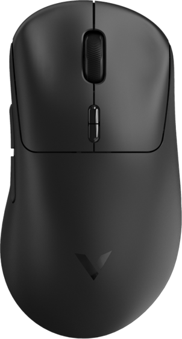

进入设置 ›

背景
选一张底色，或者导入自己喜欢的图片。
外观
点一下切换
DPI 设置
每一档对应一个 DPI，用鼠标底部的 DPI 键切换。
档位数量
提示：DPI 即鼠标灵敏度，可在鼠标上用 DPI 键快速切换档位。
性能设置
回报率、性能模式与按键扫描率。
1000 Hz
性能模式
随回报率变化高回报率下「低功耗」模式不可用。
回报率
USB 上报频率切换回报率会重新初始化无线链路，约 0.2 秒。
按键扫描率
按键采样频率按键设置
把物理按键重新映射成其他功能。
左键 / 右键中键前进 / 后退DPI 键
按键映射
写入后立即回读校验其他设置
传感器、轨迹与电源的细节参数。
VT3 · 3398
传感器
静默高度 LOD0.8 mm
去抖时间4 ms
抬起延迟8 ms
轨迹优化
电源与无线
休眠时间10 分钟
无线策略省电
应用
写入当前用户，无需管理员
卸载 RapooLite
移除程序、开始菜单与开机自启，保留你的背景与设置